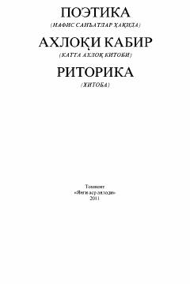

PAArastuning mashhur «Poetika», «Axloqi kabir» va «Ritorika» asarlari to'plami.
Ushbu kitob qadimgi yunon faylasuvi Arastuning «Poetika», «Axloqi kabir» va «Ritorika» asarlarini o'z ichiga oladi. Risolalarda nafis san'at qonun-qoidalari, axloq-odob me'yorlari hamda so'z san'ati va nutq madaniyati masalalari chuqur tahlil qilingan. Asar Sharq va G'arb falsafiy-estetik tafakkurining rivojiga ulkan ta'sir ko'rsatgan.